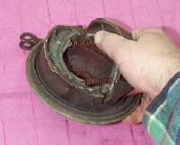

Home mechanic (basic tools) · Time: 45 to 90 min per wheel (editorial estimate) (estimate)
In a drum brake, two curved shoes with friction linings sit inside a round drum in the wheel hub. When you pull the lever or press the pedal, a cable or rod turns a cam, the cam pushes the shoes apart and they rub on the drum. This job takes the wheel out, cleans and checks the drum, shoes, springs and cam, and refits them. Most commuter bikes have a drum at the rear, and many have one at the front.
Safety
- Brake dust can be harmful (old linings may contain asbestos). Never blow it out with compressed air. Wipe with a damp cloth or use a vacuum cleaner, and wear a dust mask.
- Keep grease and oil off the linings. Contaminated shoes are replaced, not cleaned.
- Support the bike so it cannot fall when the wheel is out.
- No generic shoe thickness, drum size or free-play value is given here. Use the values in your bike's manual.
You need
- New shoes (matched pair) if worn, glazed hard, cracked, loose on the metal or oily. Shoes are sold by bike model and front or rear.
- New return springs if stretched.
- The axle torque and torque-arm torque for your bike.
Steps
- Before you start, look at the wear indicator: a pointer on the brake arm and a mark on the backing plate. If the pointer passes the end of the mark with the brake applied, the shoes are worn out.
- Remove the wheel with Remove and refit the front wheel or Remove and refit the rear wheel. Disconnect the cable or rod and torque arm first.
- Lift out the backing plate with the shoes.
- Clean the dust with a damp cloth or vacuum.
- Check the drum: hairline cracks mean the hub must be replaced. A ridge at the edge shows wear; measure the inside diameter and compare with the manual's maximum. Light shiny glaze can be removed with fine abrasive paper.
- Remove the shoes by pulling them apart by hand and folding them off the cam and pivot. Note how the springs fit.
- Check the shoes: lining thickness against the manual limit, cracks, lining coming loose, oil.
- Check the springs: stretched, rusty or broken springs are replaced.
- Turn the cam by its arm. It must turn freely and return. If stiff, remove the arm (mark its position on the splines first), clean the cam shaft, grease it with a little high-temperature grease and refit. Keep grease off the cam faces where they touch the shoes, and off the linings.
- Fit the shoes and springs. Work the brake arm by hand to see the shoes open and return.
- Refit the backing plate and wheel. Fit the torque arm, nut and new split pin. Tighten axle and torque arm to the manual values.
- Reconnect the cable or rod and adjust with Adjust a drum brake.
Check your work
- The wheel turns freely with the brake off; a very light brush is acceptable, heavy drag is not.
- The brake works well before the lever or pedal reaches its end of travel.
- The wear pointer is well inside the mark.
- Test at walking speed, then on a quiet road.
If it did not fix the problem
- Brake still weak: Drum brake is weak.
- Noise: Drum brake squeaks or grinds.
- Cable stiff: Lubricate control cables.